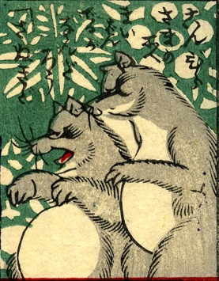

狸；タヌキ

2匹の狸が立っている。詞書には「金比羅様の所へ毎晩出るが、何だろう。たぬきだ」とある。
著作者：芳幾近二／出典：親書誌：U426_nichibunken_0229：新作おばけ野噺；シンサクオバケノバナシ／日付：2010／資源識別子：U426_nichibunken_0229_0005_0000
Copyright (c)2010- International Research Center for Japanese Studies, Kyoto, Japan. All rights reserved.